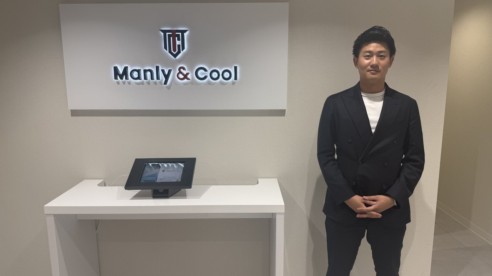
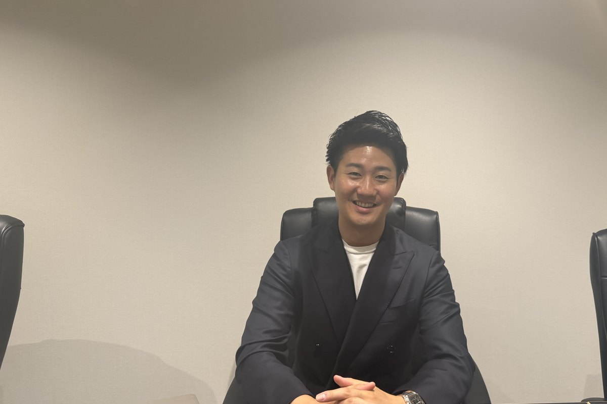

INTRODUCTION
新卒就活生のキャリア支援を行う新卒紹介エージェント「株式会社Manly&Cool」様。代表の金澤 聡氏が共同創業し、現在はCA（キャリアアドバイザー）10名体制で展開しています。1人の求職者に何度も向き合う"やり切り型"の支援が特徴です。複数の送客サービスを使い分ける中で、「求職者送客の窓口」経由の求職者は面談実施率69.7%・選考進行率約70%と突出した成果に。今回は、その背景と高い成果を生む面談・支援のスタイルについて、金澤氏に詳しく伺いました。
まず、新卒の集客はどのように行ってきましたか？
創業当初は実績がゼロだったので、とにかく自分たちで開拓し、テレアポでアポイントを取って…と泥くさく動いていました。そこから安定して母集団を確保するために、大手の登録課金型の送客サービスを中心に活用してきました。
ただ、登録課金型はリードに対して面談まで至る率や決定率が見合わないケースもあって。やはり集客がこの人材ビジネスの一番の鍵なので、より成果につながる送客先を常に探していたんです。
複数の送客サービスを使う中で、「求職者送客の窓口」の成果はいかがですか？
数字でいうと、面談実施率が69.7%です。登録課金型のサービスだと30%ほどのこともあるので、その時点でかなり差があります。送客いただいた方がきちんと面談まで来てくださる、というのが何より大きいですね。
さらに驚いたのが、紹介した求人への選考進行率です。御社経由だと約70%まで進んでいて、これは正直"異常に高い"水準なんです。一般的にはリファラル（紹介）経由でようやく7割くらいなので、御社はリファラルと同等の水準が出ている。登録課金型の送客だと3割台のこともあるので、御社経由がいかに突出しているかが分かります。
数ある送客サービスの中で、「求職者送客の窓口」に注力する決め手は何ですか？
シンプルに、成果がはっきり出ているからです。私たちは複数の送客サービスを使ってきましたが、面談実施率や選考進行率といった"数字"で判断して、結果の出るところに集中する方針なんです。御社はその両方が突出して高いので、自然と御社経由の比率が上がっていきました。費用対効果が明確なのは、事業を回す側として本当にありがたいですね。
導入前のイメージと、実際とのギャップはありましたか？
正直に言うと、御社はSNSで集客されていると伺っていたので、最初は「ゆるふわな学生さんが多いのかな」というイメージを持っていました。ところが実際に来てくださる求職者は全然違って、ハードワークも厭わないようなメガベンチャー系・成長環境の求人にもしっかり刺さるんです。本気度の高い方が多くて、イメージと全然違って驚きました。
なぜそれほど本気度が高いのだと思いますか？
御社のカウンセリングが、「特定のエージェントを売り込む」のではなく「そもそもエージェントを使うべきだよね」という前提づくりから入っているからだと感じています。「ちょっと相談してみたいだけ」という層を集めるのではなく、エージェントをきちんと活用しに来た方が届く。だから私たちの面談も初回から深い話ができるんです。
面談で大切にしていることを教えてください。
初回はだいたい30分です。過去を深掘りするより、"未来"のヒアリングを大事にしています。過去をいくら掘っても未来は出てこないので、「これからどうなっていきたいか」を起点に、その目的から逆算して「達成する手段としての会社」を提案していく、という流れですね。
将来の夢が明確でない学生さんも多いのですが、そこは選択肢を提示しながら一緒に目的を作っていきます。「起業したい」「スキルをつけて選択肢を広げたい」「しっかり稼ぎたい」といった軸を一緒に選んでもらいながらリードしていくイメージです。

求人提案はどのように進めますか？
最初に10社ほど候補を当てて、そこから3〜4社に絞り込んでいきます。選考に落ちても都度補充しながら、その方に本当に合う進路が見つかるまで一緒に探します。量を当てて終わりにするのではなく、最後まで伴走するのが前提です。
面接対策はどこまでやり込むのですか？
とにかく、やり切ります。紹介する企業は決して簡単に受かるところばかりではないので、対面でもオンラインでも、納得いくまで何度も対策を重ねます。結果として1人あたりの面談回数は、昨年の実績で平均21回。多いメンバーだと26回ほど向き合っています。おそらく業界の中でもトップクラスにやり込んでいるという自負があります。
ここまでやるのは、対策をやり切らないと学生さんの成果にも、私たちの成果にもつながらないからです。御社経由の求職者は本気度が高いぶん、対策にもしっかり付いてきてくれるので、やった分だけ結果に返ってきます。
スピード感で意識していることはありますか？
初回面談から2回目までは、必ず3日以内に設定します。1週間も空くと熱量が下がってしまって、足が遠のいてしまうんです。求職者の気持ちが動いているうちに、次の一歩を一緒に踏み出すことを徹底しています。
内定承諾まで、どのように伴走しますか？
初回面談から内定承諾までのリードタイムは、平均で3ヶ月ほどです。その間、面接対策はもちろん、「本当にこの選択でいいのか」を学生さんと一緒に確認し続けます。紹介して終わりではなく、最後の意思決定まで伴走するイメージですね。
一般的には、初回面談から内定承諾に至る割合は1割ほどと言われる世界です。だからこそ、選考進行率の高さに加えて、最後の承諾まで丁寧に向き合えるかどうかが成果を分けると考えています。
成果を出すCAに共通点はありますか？
自己効力感・自己肯定感が高く、自信を持って言い切れる人ですね。そこに最低限の地頭と、バイタリティがある。学生さんは何が正解か分からない中で相談に来るので、自信を持って導いてくれる人に惹かれるんです。だからこそ、キャリアアドバイザー自身の"自信"がとても大事だと感じています。

御社ならではの、ユニークな支援はありますか？
内定が決まって終わり、ではないところですね。内定承諾後から入社までの期間に、希望する学生さんには私たちの営業支援事業の現場でインターンとして実務を経験してもらっています。入社先で活躍できなければ本人の幸せにつながらないので、その前にしっかり力をつけてもらう。いわば「仕入れて、加工して、送り出す」という一気通貫の支援です。
ここで鍛えられた人材は入社先でも高い評価をいただくことが多く、企業様にもとても喜んでいただけています。新卒紹介だからこそできる関わり方だと考えています。
今後の展望と、「求職者送客の窓口」への期待を聞かせてください。
新卒紹介の領域はまだまだ拡大できると思っています。今は新卒経験のあるカウンセラーの採用を強化しているところです。送客についても、御社経由は成果がはっきり出ているので、これからもっと数を増やしていきたいですね。引き続きお力添えいただけると嬉しいです。